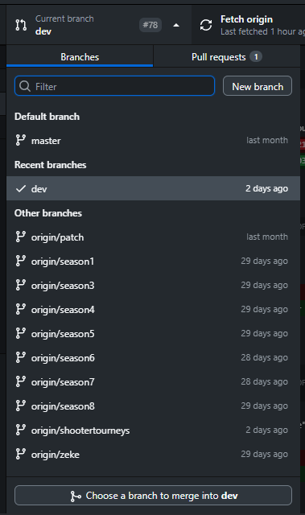

This module applies to every single of our repositories. Branching is very important to us as it makes version control a whole lot easier. Let's use ZAMNHLMP as an example: the 'master' branch will have the latest RELEASE build of the game, 2.9, and the 'dev' branch will have a work-in-progress build of 2.10-PPT01. However, what if a bug gets found in 2.9? We can't bring all the 'dev' changes to 'master' in a jiffy. So we would then switch to another branch based on 'master,' called 'patch' - and when that's done, that gets merged into 'master,' and 'master' gets its new changed merged into 'dev.' Then, on that fateful release day, all of the new changes from the 'dev' branchget merged into 'master' via a tracked pull request.
This is quintessential whether you're a tester or a developer. To switch branch, just open the Current branch menu at the top of GitHub Desktop and select 'dev' or 'master'. Once the branch has finished checking out, perform a Pull (as shown in module 1b). You may be asked if you want to bring over your changes or leave them in the current branch; in this case, cancel the operation and discard your changes - then try switching branch again.
